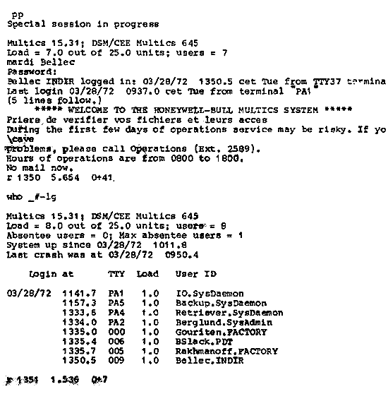

A short description of early 645 systems and of the first Multics outside the United States.
Project Shangri-La
GE assembled a lot of people in Florida at the Diplomat Hotel at Hollywood by the Sea during the summer of 1969,
among them André Bensoussan, a French employee working on Multics.
I assume that the project name, "Shangri-La," name came from the legend about an Himalayan valley that was the land of Happiness.
GE drafted a plan for a new product line that was to be a  32-bit line targeted straight against the IBM 360.
The plan ignored Multics, which was no more than a crude prototype at that time.
However, we in France were aware of the Multics design and with the help of André,
we borrowed many Multics concepts for the nucleus of our system, struggling with the shorter word size and the different target.
GE decided that such a plan was too expensive and sold its business to Honeywell.
32-bit line targeted straight against the IBM 360.
The plan ignored Multics, which was no more than a crude prototype at that time.
However, we in France were aware of the Multics design and with the help of André,
we borrowed many Multics concepts for the nucleus of our system, struggling with the shorter word size and the different target.
GE decided that such a plan was too expensive and sold its business to Honeywell.
Merger
Honeywell acquired the GE business and more specifically the customer base (Europe and large US GECOS customers) in early 1970. Honeywell had recently killed the ACS engineering plan for a product line targeted to replace the H200 product line. It was interested in the Shangri-La plan, which was backed by three years of engineering studies at Compagnie Honeywell-Bull (the then French operation, not to be confused with 1985 Honeywell-Bull, the american arm of Bull) and its emphasis brought to hardware emulation. After a study made by Dr. Ugo Gagliardi, a Harvard professor, and Dr. J. W. Poduska, the future founder of Prime and Apollo, who had an office at Tech Square, Honeywell backed the GE plan for small (future Level 62) and medium (future Level 64 and DPS7) systems. Dr. Gagliardi was named the head of the project in 4Q 1970.
Software Factory for Level 64
Initially, CHB was planning to use a GCOS GE-635 machine as a software factory. The Boston group and Dr. Gagliardi were able to change that plan and to acquire Multics systems. So a 645 with firehose drum, disk, tapes and a card punch was installed late in 3Q 1971 in Billerica, MA, essentially for the development of a cross compiler and a simulation environment and for compiler development. A 1200 baud comm line to Paris allowed up to 5 TTY-37s in Paris to access the system from 1a.m. EST to noon EST (i.e. during the morning in Paris). As the Level 64 prototype had no tape initially, the bootstrap software was punched in Boston just before the flight departure to Paris, so we got a one-day turn-around. A second 645 was installed in Paris in March, 1972, with bulk core storage and IBM 2314 disks. {Story: Installing the GE-645 in Paris By Dave Vinograd.} It was the primary development machine. The synchronization with the Boston system was made daily by tape carried by plane. The Paris 645 was able to sustain around 25 terminals doing data entry, mail, and software editing and 1 heavy process such as compiling or running the simulator. The main advantage of Multics was the on-line writing of programs and the capability of intercommunication between teams.
The Paris 645 was removed circa 1975 and was not replaced. Paris activity on Multics did not start again until the late 70s after the merger between CHB and CII (with the INRIA system). I don't remember the fate of the Billerica 645 system and if it was used for Level 6 development after 1975.
TTY-37 output from the first days of the 645 in Paris. In a "special session," users could not log in unless they knew the secret login word. The login command is named mardi for this session.

14 Oct 1998, revised 08 Oct 1999